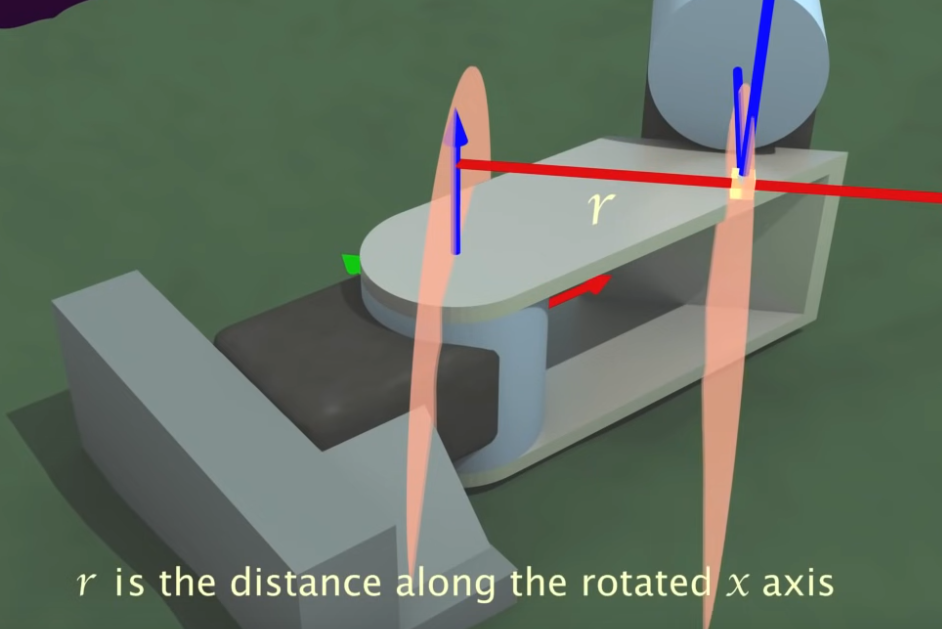
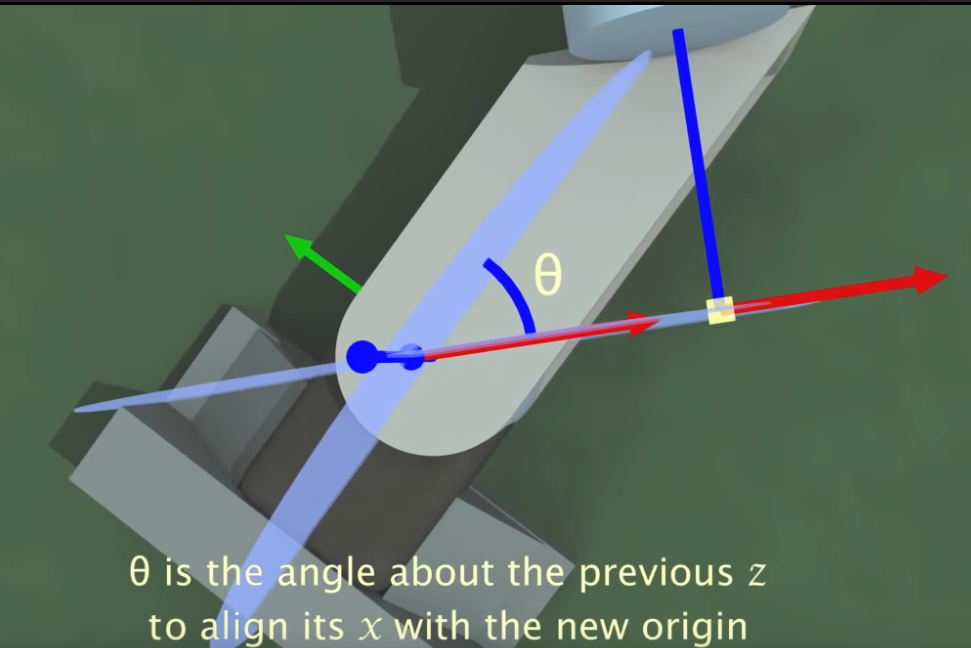
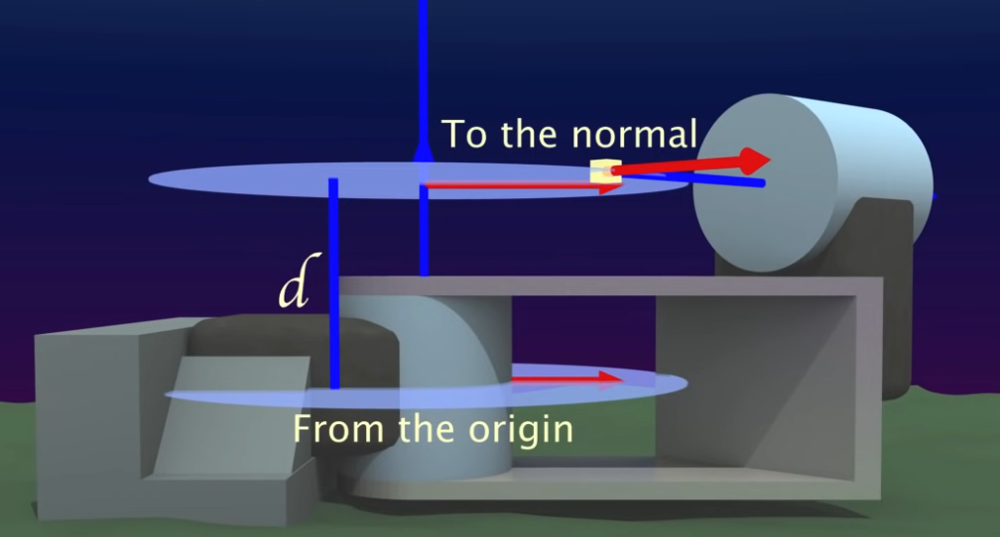
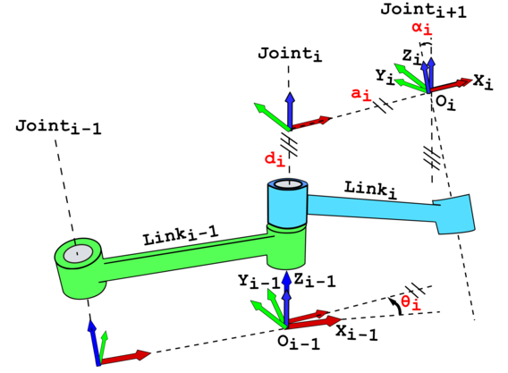

Denavit-Hartenberg convention
https://www.youtube.com/watch?v=rA9tm0gTln8
Denavit-Hartenberg convention
\[ R_x(\alpha) = \begin{bmatrix}
1 & 0 & 0 \\
0 & \cos(\alpha) & - \sin(\alpha) \\
0 & \sin(\alpha) & \cos(\alpha)
\end{bmatrix}
\]

\[ T_x(\alpha, r) = \begin{bmatrix}
1 & 0 & 0 & r\\
0 & \cos(\alpha) & - \sin(\alpha) & 0\\
0 & \sin(\alpha) & \cos(\alpha) & 0 \\
0 & 0 & 0 & 1
\end{bmatrix}
\]
Denavit-Hartenberg convention

\[ R_z(\theta) = \begin{bmatrix}
\cos(\theta) & - \sin(\theta) & 0\\
\sin(\theta) & \cos(\theta) & 0 \\
0 & 0 & 1
\end{bmatrix}
\]

\[ T_z(\theta, d) = \begin{bmatrix}
\cos(\theta) & - \sin(\theta) & 0 & 0\\
\sin(\theta) & \cos(\theta) & 0 & 0\\
0 & 0 & 1 & d \\
0 & 0 & 0 & 1
\end{bmatrix}
\]
Denavit-Hartenberg convention
\[ {}^{i}T_{i+1} = T_z(\theta_i, d_i) T_x(\alpha_i, a_i); \quad a_i = r \]

Software infra in ROS to handle transformations
tf2